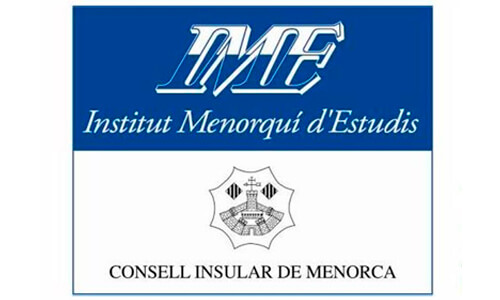
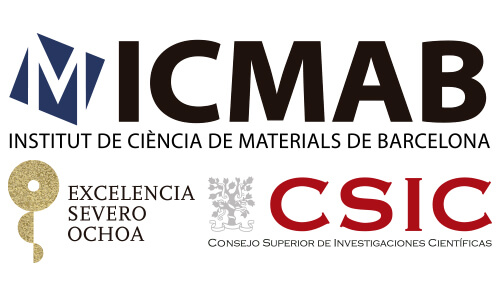
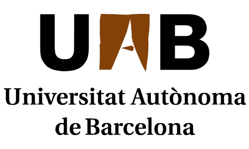

ORGANIZERS
TCM2017 Organizers




Since 1985, the Societat Catalana de Física (SCF) and the Institut Menorquí d’Estudis (IME) organize the "Trobades Científiques de la Mediterrània" (TCM - Scientific Meetings of the Mediterranean) with the support of several institutions. The main goal of the meetings is to provide an environment for the exchange among scientists of a specific subject in the field of Physics.
Starting from the XXIX edition, held in 2013, the TCM series was renamed to “Trobades Científiques de la Mediterrània – Josep Miquel Vidal”, in recognition of the driving force behind the previous twenty-eight editions.
The subject of the current TCM 2017 will be electron and phonon transport, and their interactions, both at the micro and nanoscale. The topics include modelling, characterization and measures of electron and phonon transport phenomena. The meeting will be held in the idyllic placement of the Minorquian islands, and it will foster the exchange of the more recent results in this area. The final goal will be the establishment of new synergies among all participants to advance the understanding of the electronic and phononic properties of the new generation of nanomaterials exploiting the potentialities of the novel phenomena in the area of the interaction between electrons and phonons.
The subject includes modelling, characterization and measures of electron and phonon transport phenomena in materials with nanoscale dimensions. The meeting will be held in the idyllic placement of the Minorquian islands, and it will foster the exchange of the more recent results in this area. The final goal will be the establishment of new synergies among all participants to advance the understanding of the electronic and phononic properties of the new generation of nanomaterials exploiting the potentialities of the novel phenomena in the area of the interaction between electrons and phonons.
Topics:
Those interested in makeing a presentation must send an abstract by email to xavier.alvarez@uab.cat before September 25th . No hi ha un número máxim de comunicacions per participant.
Abstracts must be submitted according to the following TEMPLATE
Authors will receive an acceptance notice on September 30th.
Organising committees
Together with the Institut Menorquí d'Estudis (IME) and the Societat Catalana de Física (SCF), the current edition will be organised by the Universitat Autònoma de Barcelona (UAB) and the Institut de Ciència de Materials de Barcelona (ICMAB).
Scientific Committee
Organising Committee
Confirmed invited speakers
The programme will be published after the registration deadline.
October is not peak season and there should not be accomodation problems. Despite of this, we have blocked a number of rooms with the following prices:
MIRADOR DES PORT ***
HOTEL CAPRI ***
ROYAL APARTAMENTS **
HOSTAL JUME
TCM2017 Organizers